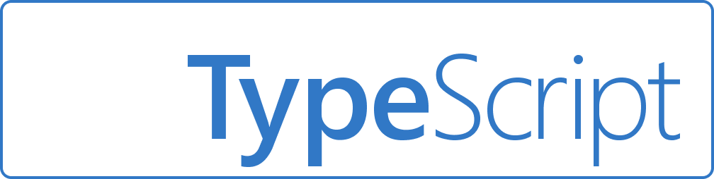
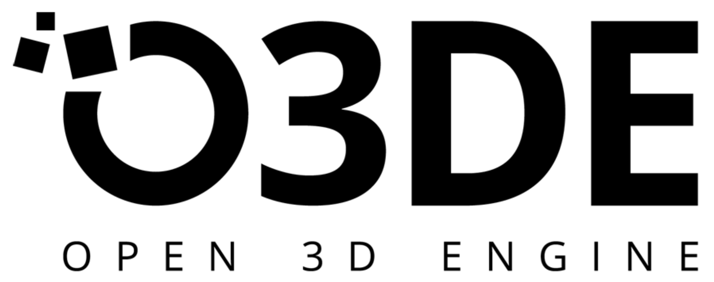
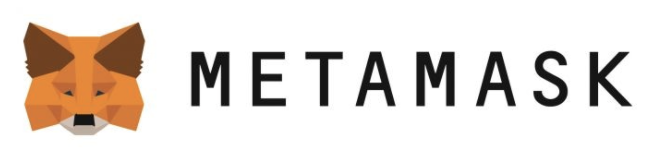

Jay Clark
wants to work for you.
I am a full stack software engineer seeking employment opportunities.
See my workRead my story
Primary tech stack


Secondary Tech, Frameworks & Libraries
Get to know me
I'm a Harvard-educated professional with strong communication skills and experience in mentorship and teaching.
I learn quickly, accept constructive feedback gratefully, and share knowledge freely with peers who need assistance.
I care deeply about diversity & inclusion, decolonization, and transgender rights.
Read My BioWatch My Video Intro

Github
Applying best practices
I've used git and GitHub from the start of my training to build expertise in pull requests, resolving merge conflicts, and posting clean commits. I recently completed an Open Source Challenge to submit 100 open source software pull requests in 100 days, which significantly expanded my git and GitHub experience.
Go to my GitHubCodewars
Coding Challenges
I train regularly on Codewars, completing as many kata as possible in a 1-2 hour time frame. I've achieved a rank of 3 kyu in Javascript, which reflects a 'highly competent' skill level, and I rank among the top 1.4% of developers on the site.
Go to my profile
Instaplate

This full stack project envisions what it would look like if Instacart started offering restaurant delivery a la Ubereats or Doordash. It has a Next.js front end, a Strapi api layer, and a MongoDB back end data store.

A simple full stack chat application that uses Firebase for its data store.
Holy Grail

A small demo project using Express and Redis.

Back End
I work primarily in Node.js on the back end, though I've also done some work in Ruby on Rails and LAMP.
Open Source Software
I've contributed code to more than 70 open source software projects including:
- 
- 
 Create React App
Create React App React Bootstrap
React Bootstrap- 
RailsDev.io

 |
|  300 lines of code changed
300 lines of code changed
RailsDev is a reverse job board for Rails developers. For this project, I implemented a notification badge and notification system UI. In 5 days, I learned enough Ruby and Ruby on Rails to be able to contribute meaningfully at a junior level.
See My WorkView Project RepoInteractivenn
| 4000+ lines of code changed
This scientific resource for the interactive visualization of the intersection of sets had an outdated (pre 2015) Javascript codebase. I completed a major refactoring & modularization of the backend logic to prepare the diagram and set services for publishing on the npm registry. I also gave the UI a minor facelift.
See My WorkView Project RepoRotting Research
| 500+ lines of code changed
This python/flask resource to help researchers identify outdated links in scientific publications needed general styling improvements as well as a responsive design that would work on tablets and phones. I made minor adjustments to the UI, using some of the methods outlined on RefactoringUI.com, and the result was a substantial improvement in the UI.
See My WorkView Project RepoBad Bank

This front end project allows users to create accounts, deposit and withdraw funds, view recent transactions... and also view all user account info and passwords! Data is stored locally and resets with each reload.
Clones

Clones of various commercial websites' desktop apps, with a toggler function to load different sites into the app. Built with React. Note - does not work on mobile.
Ms. Pac-Man

A desktop browser game built with vanilla JS. Ms. Pac-Man eats dots and runs from Inky, Blinky, Pinky & Clyde while racking up points on the scoreboard. Surprisingly difficult to beat!
Front End
I work primarily in React and vanilla JS on the front end, though I've also done some work with Vue & Angular. I'm also familiar with customizing templates/CSS in Wordpress and Wix.
My Training Plan
MIT Full Stack Development Certificate
I've completed the a Professional Certificate in Full Stack Development with MERN with MIT xPro. This 32-week program covers web development, javascript,front-end development with React, and back-end development with Express, MongoDB and Node.js.
Harvard CS50
I'm completing Harvard's CS50 - a course I regret not having taken as an undergrad. This 10-week course with paid certificate option covers more theoretical and foundational computer science concepts than those addressed by the MIT certificate. The primary languages are C and Python.
Harvard Data Science Certificate
I'm completing a nine-course, probability & statistics-focused Data Science Certificate through Harvard's eduX program. The primary language used in this course is R.
MIT Machine Learning Certificate
I'm completing a math-intensive machine learning certificate with MIT xPro. This 10-week program will help me brush up on linear algebra, multivariable calculus, and discrete mathematics while applying those skills to modern computational engineering problems.
Open Source Courses
To supplement my paid coursework, and cover education content similar to that involved in completing an undergraduate degree in CS, I'm taking Berkeley's CS61A, CS61B, and CS61C, and Princeton's Algorithms.
Competitive Programming
I train regularly on Codewars, focusing on speed, simplicity, and readability. As I move into the active job search phase, I'll be shifting my focus to LeetCode and participating in LeetCode competitions.
Hire me
I'm looking for full-time W2 or 1099 employment. I'm also available on a volunteer basis for Civic Tech and Open Source Software projects.
Let's talk about a possible role for me on your team.
Get in touch